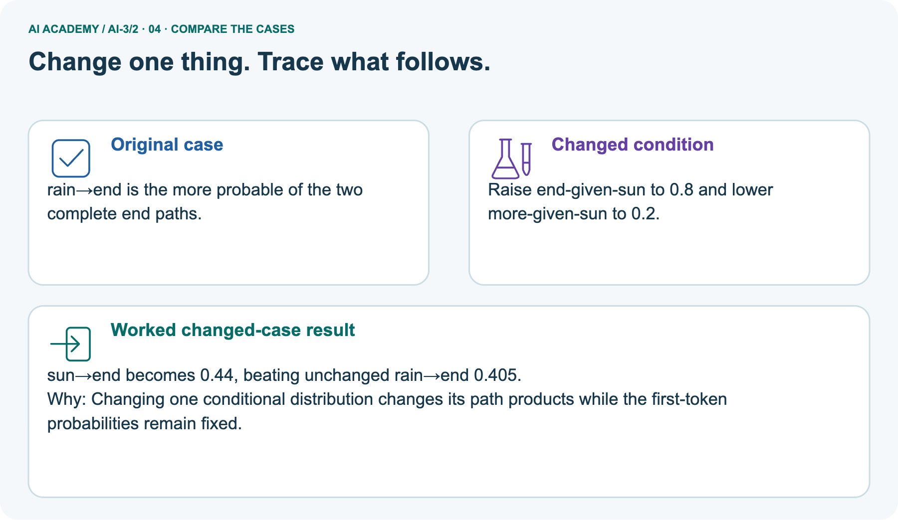
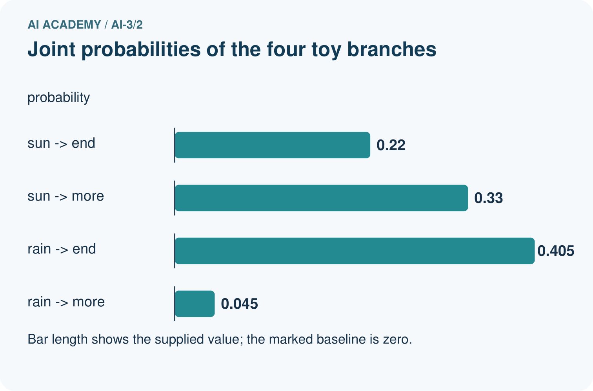
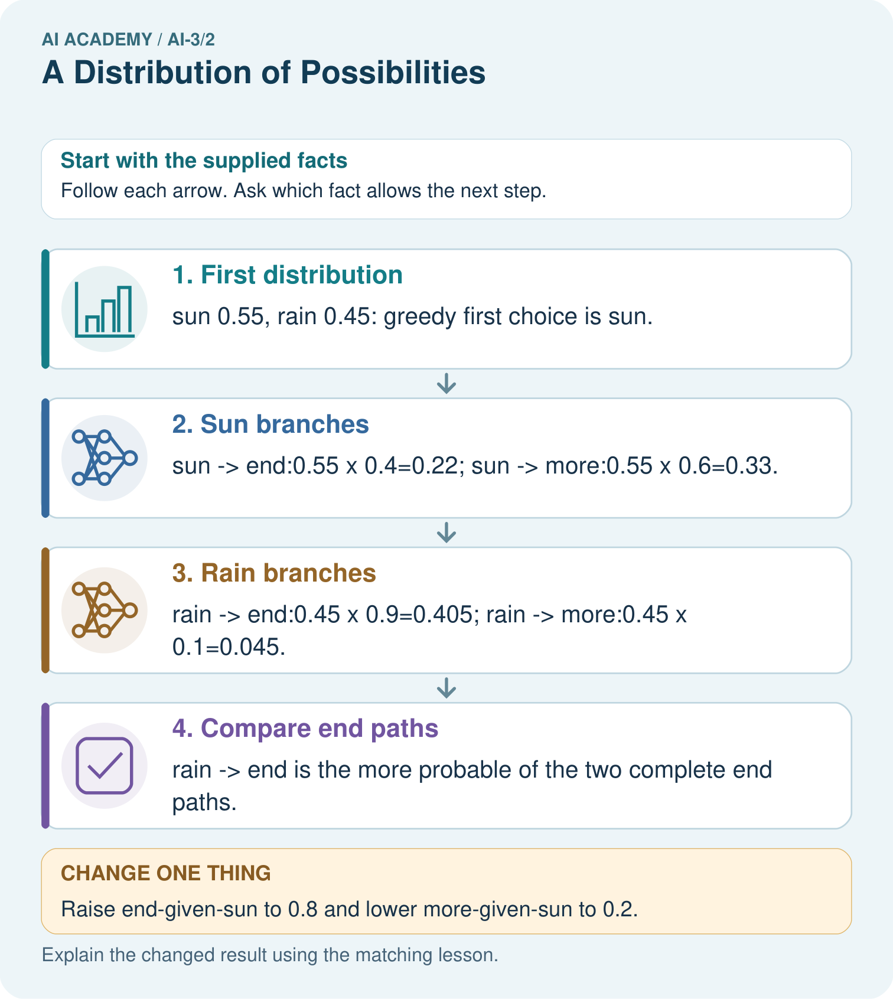
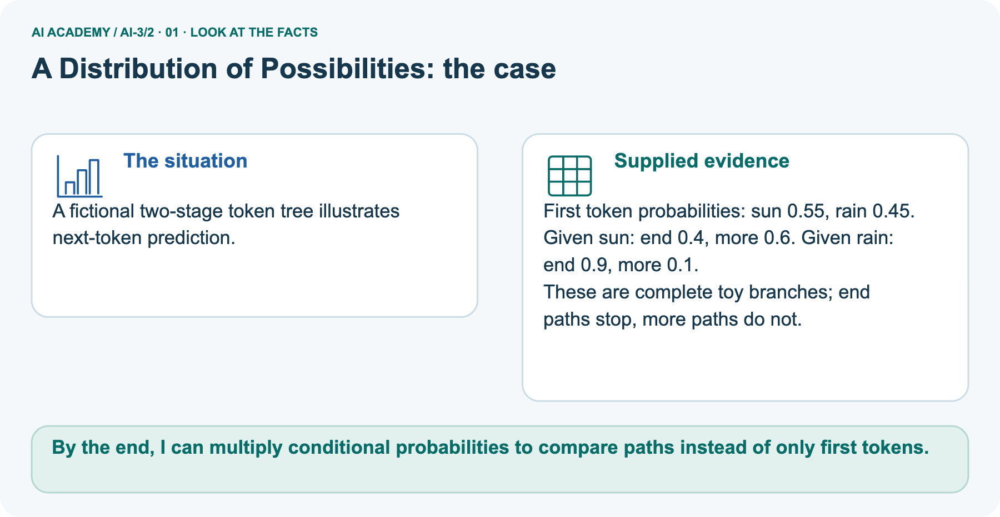
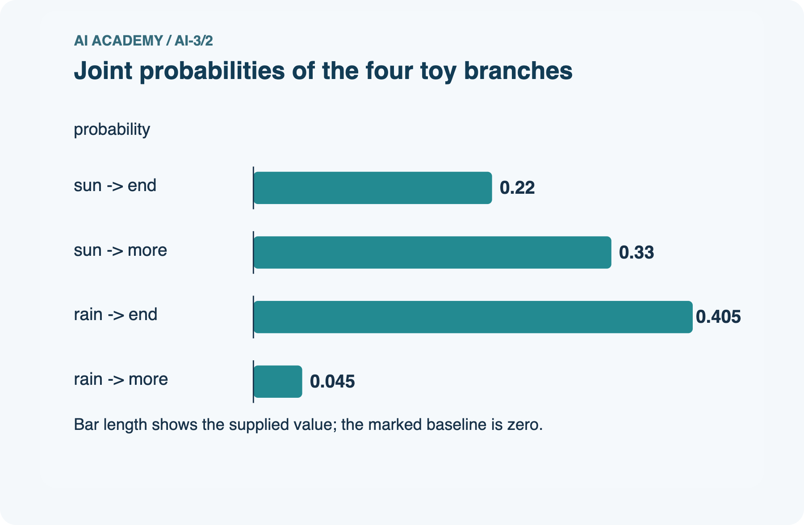
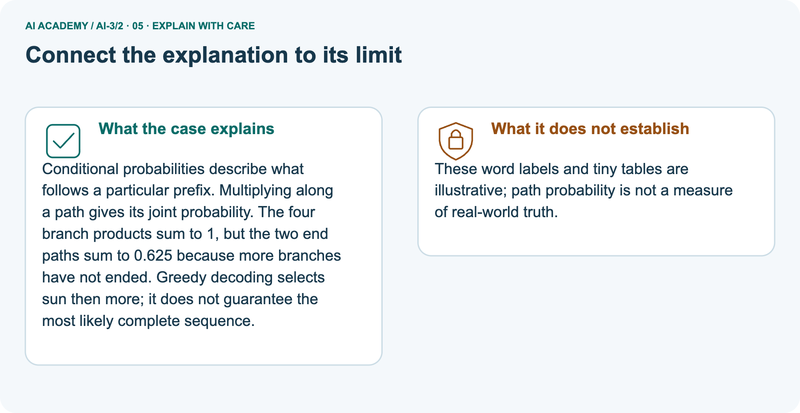
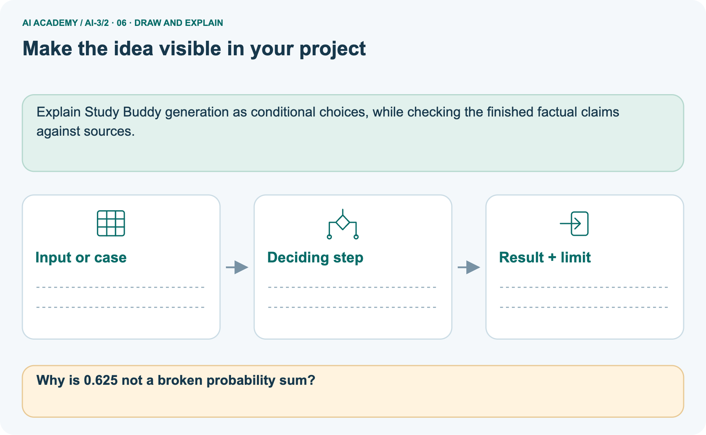

AI Academy · Level 3 · Grade 8 · Week 2 · Student lesson
A Distribution of Possibilities
Learn to understand, design, build, test and explain AI systems responsibly.
Project: Verified Study Buddy
THE CONNECTED WEEK
Validate the table. Multiply the path. Name the event.
Compare conditional token paths while preserving scope and factual evidence limits.
Keep one habit: Probability contract → six paths → greedy counterexample → sampling/exact audit → independent table.
Main lesson · Section 1
Which path is more likely, and what does that mean?
Validate distributions and multiply conditional probabilities without treating them as factual evidence.
Your learning goals
I can check whether a next-token table is a valid probability distribution.
I can calculate a two-step sequence probability using conditional probabilities.
I can explain why token probability does not measure factual truth.
Recall stated alternatives and conventions
Close your notes first. A rough first answer helps us choose the right starting point; it is not a score for your ability.
Why must token counts name the vocabulary and special-token convention?
Your end goal
By the end, I can multiply conditional probabilities to compare paths instead of only first tokens.
Representation extension · IDs and meaning
Do adjacent vocabulary IDs prove that their tokens have similar meanings?
Earlier wording, alternatives and picture transcripts
Your learning target
Remember before reading
Without opening the old lesson, explain one key idea from Predictive and Generative AI. Give an example and a mistake that the idea helps you avoid.
After trying, check the relevant lesson or ask your teacher. Change the part of your explanation that the evidence shows was wrong.
Week 2: A Distribution of Possibilities
A generator assigns different likelihoods to possible continuations.

CREATOR MISSION
Run a weighted-word simulation and compare repeated outputs.
Creator name and date:
Readiness for the connected explanation
Readiness for Embeddings and position
This week’s end goal
Main lesson · Section 2
Keep the prefix and alternatives beside each probability
Weights need an explicit normalisation rule before they are probabilities.
The complete Status distribution
A constructed model uses prefix “Status:” and vocabulary alternatives ready, busy and unknown. Its next-token table is ready 0.5, busy 0.3, unknown 0.2. All entries are nonnegative and sum to 1.
A probability belongs to a token under this prefix and model, not to that token in every situation. An omitted vocabulary alternative would make the interpretation incomplete unless its probability were explicitly zero.
Detect an invalid distribution and normalise only permitted weights
A table containing 0.6,0.3,0.3 sums to 1.2 and is not already a probability distribution. If the values are nonnegative weights and the rule says normalise, divide each by 1.2. Do not silently treat weights as probabilities.
Negative weights cannot be repaired by this simple normalisation rule.
Representation extension · Token lookup and position scheme
Use a two-token vocabulary: ID 1 means red with embedding [1,0]; ID 2 means blue with embedding [0,1]. This lookup table is constructed, not trained.
The input red blue has embedding rows [1,0] and [0,1], so its shape is two sequence positions by two components. Reversing the text reverses the rows. ID 2 is not “twice as blue” as ID 1 is red.
A model needs a way to use order. A collection of vectors without any order-sensitive procedure may lose that distinction. We introduce one explicit toy scheme: add position vector [0,0] at position 0 and [2,0] at position 1.
These invented values teach arithmetic; they are not a recommended production encoding.
Earlier wording, alternatives and picture transcripts
PICTURE STORY
Notice → Predict → Explain
Begin with visible evidence. Do not explain more than the picture and information support.
MYSTERY
The learners must use a distribution of possibilities to solve a problem. What information do they have? What decision or calculation do they make? What would count as evidence that it worked?
Three observations (what you can point to):
My prediction and the clue supporting it:
A closer explanation
Apply the connected idea: Embeddings and position
Main lesson · Section 3
Multiply down each branch, then add the stated paths
Conditional products use the appropriate expanded prefix; they do not assume independence.
Read the complete second-step Status table
| Expanded prefix | End probability | Today probability |
|---|---|---|
| Status: ready | 0.8 | 0.2 |
| Status: busy | 0.5 | 0.5 |
| Status: unknown | 1 | 0 |
Compute all six paths and their total
The probability of ready followed by end is 0.5*0.8 = 0.4. Ready followed by today is 0.5*0.2 = 0.1. Busy followed by end is 0.3*0.5 = 0.15, and busy followed by today is 0.15.
Unknown followed by end is 0.2 and unknown followed by today is 0. Together these six two-step paths sum to 1. These products are chain-rule calculations; they do not assume the second token is independent of the first.
Trace the three end paths
Keep the evidence roles separate
Explain the deciding step
Point to the input, the deciding step and the result in this week’s visual. Explain the same step in ordinary words. A picture helps when you can say what each part represents.
Representation extension · Ordered rows and shape contract
| Sequence | Position 0 representation | Position 1 representation |
|---|---|---|
| red blue | [1,0] + [0,0] = [1,0] | [0,1] + [2,0] = [2,1] |
| blue red | [0,1] + [0,0] = [0,1] | [1,0] + [2,0] = [3,0] |
The same red token now has [1,0] at position 0 and [3,0] at position 1. Both token identity and position affect the represented row.
Addition requires equal widths; adding a three-component position vector to a two-component embedding violates the input contract. Record the position numbering and embedding-table version.
Keep the evidence roles separate
Earlier wording, alternatives and picture transcripts
VISUAL MECHANISM
Input → Process → Output
Trace the information. At each stage, ask what changed and how you could test it.

↓

↓

Which stage could fail even when the other two are correct? Explain:
A closer explanation
Apply the connected idea: Embeddings and position
Connect the picture and the explanation
Main lesson · Section 4
Compare valid tables, incomplete paths and unsupported claims
A high-probability continuation is still an output to evaluate.
Four pictures with a purpose

Normal case: predict the result and deciding evidence.

Boundary case: identify the exact limit.

Missing information: name what must be clarified.

Transfer case: explain which procedure still applies.
Choose a revealing case
Which case is most likely to reveal a hidden assumption? Why?
Predict the supplied changed case
Change: Raise end-given-sun to 0.8 and lower more-given-sun to 0.2.
Check after predicting
Prediction: sun→end becomes 0.44, beating unchanged rain→end 0.405.
Reason: Changing one conditional distribution changes its path products while the first-token probabilities remain fixed.
Earlier wording, alternatives and picture transcripts
CASE GALLERY
Four Tests, Four Kinds of Evidence
A system is not understood until it survives more than one comfortable example.
NORMAL CASE: predict and name evidence. BOUNDARY CASE: predict and name evidence.
MISSING INFORMATION: predict and name evidence. TRANSFER CASE: predict and name evidence.
Change one thing in the pictured case
Main lesson · Section 6
Challenge greedy decoding, then trace a separate sun/rain tree
Keep Status, A/B and sun/rain distributions separate.
Read the complete A/B counterexample
Greedy decoding chooses the largest next-token probability at each step, with an explicit tie rule if needed. It does not always maximise the probability of a complete sequence. Counterexample: first-step A=0.6 and B=0.4.
Given A, end=0.51 and x=0.49; given B, end=1. Greedy produces A,end with probability 0.306. The path B,end has probability 0.4, larger than 0.306.
This comparison concerns exactly two-step paths; longer completion probabilities require the later conditionals too.
Separate path likelihood from factual support
A high path probability measures the model’s preference over these specified paths. It is not evidence that a status claim matches a live observation. Format checks and source checks remain separate.
Read the separate pictured sun/rain branches
A fictional two-stage token tree illustrates next-token prediction.
First token probabilities: sun 0.55, rain 0.45. Given sun: end 0.4, more 0.6. Given rain: end 0.9, more 0.1.
These are complete toy branches; end paths stop, more paths do not.
Trace all four branch products


Read the picture one step at a time
Conditional probabilities describe what follows a particular prefix. Multiplying along a path gives its joint probability.
The four branch products sum to 1, but the two end paths sum to 0.625 because more branches have not ended. Greedy decoding selects sun then more; it does not guarantee the most likely complete sequence.
Predict changing only sun’s conditional distribution
Change one thing: Raise end-given-sun to 0.8 and lower more-given-sun to 0.2. Predict the result before checking the explanation. What remains the same?
Check after predicting



Explain the partial end-path sum
These word labels and tiny tables are illustrative; path probability is not a measure of real-world truth.
Read the labelled picture: Why is 0.625 not a broken probability sum?
Representation extension · Row sum loses order
The elementwise sum of the represented rows is [3,1] for both red blue and blue red. This aggregate loses the row-order distinction despite the position additions.
A later computation must actually use the represented rows appropriately; merely adding position vectors does not guarantee that every summary preserves order.
A position scheme may use learned values or a deterministic construction. The original Transformer added positional information to embeddings. Modern architectures can use other order-sensitive schemes.
Our two-vector example demonstrates one possible mechanism and one information-loss failure, not all architecture choices.
Earlier wording, alternatives and picture transcripts
WORKED EVIDENCE
Reason Step by Step
Predict first. Then check each step. A correct answer without visible reasoning is incomplete evidence.

1. Possible next words have weights: clear 5, useful 3, magical 1.
2. Nine tokens in the spinner represent those relative weights.
3. Repeated sampling can produce different sequences.
4. One sample does not reveal the whole distribution or guarantee truth.
Recalculate, retrace, or restate the reasoning in your own representation:
CHECK Did the evidence answer the exact question? Did the total, path, or source record stay consistent?
A closer explanation
Apply the connected idea: Embeddings and position
Learn from the worked case
Cover the result before checking it. Say what is given, choose the procedure, and follow one step at a time. Then uncover the result and explain your first mismatch. Ask why a step is allowed, not only what number it produces.
A pictorial worked case: A Distribution of Possibilities
The facts we will use






Why this result follows
What this example does not establish
Main lesson · Section 7
Find which alternatives a probability sum includes
A partial event need not have probability1.
Repair the incomplete-sum argument
Claim to repair: The two end paths sum to0.625, so the sun/rain table is invalid. That sum includes only sun→end and rain→end. The two more paths carry0.33+0.045=0.375, so all four two-step paths sum to1. The more paths have not ended; their eventual completed-sequence probabilities need later conditional tables that are not supplied.
Do not invent those probabilities or compare a partial branch with an unspecified full continuation.
Propose a revealing changed table
Earlier wording, alternatives and picture transcripts
ERROR DETECTIVE
Compare → Diagnose → Repair
Do not patch the answer. Find the earliest unsupported assumption, wrong step, or weak evidence.

| Evidence record | Expected | Actual | Likely cause / next test |
|---|---|---|---|
| normal case | works | ||
| boundary case | stated rule | ||
| missing input | safe response | ||
| fresh transfer | generalizes |
Repair one cause. Why is this repair better than changing several things?
A closer explanation
Always report the prefix, alternatives and stage. The complement of ready in the first table is busy or unknown, probability 0.5; it is not automatically busy.
Values rounded for display may not sum exactly to 1, so retain full values for calculations and label rounding. A missing or invalid table should lead to an explicit error, not a confident probability claim.
Apply the connected idea: Embeddings and position
State whether a vector is a token embedding, a position vector or their combination before calculating distances. Position changes can affect numerical similarity even for the same token.
An unknown token or a sequence beyond the toy position table needs explicit handling. This two-position contract rejects a third position; it does not silently wrap back to position 0.
Main lesson · Section 8
Practise a separate red/blue path comparison
State which prefix each conditional belongs to.
Read the supplied red/blue probabilities
Supported table: first red=0.4, blue=0.6. End given red=0.9 and end given blue=0.5. The red,end path has probability 0.36. The blue,end path has probability 0.3 despite blue being the larger first-step probability.
Compute both specified end paths
Complete main Status W2
Practise with less help: Calculate the paths
Use workbook W2 for the connected example “Next token distributions”. First fill the input and rule boxes. Try the middle steps before asking for a hint. After a hint, try the next step yourself.
| Plan | Do | Check |
|---|---|---|
| What is given? Which rule or procedure applies? | Record each intermediate step. | Does the result follow? What remains unknown? |
Repair the independence claim
Use the worked case for Next token distributions. Proposed explanation: “Conditional products assume independence”. Decide whether this explanation is supported.
Point to the step or supplied fact that decides; explain your repair if needed.
Answer on your own before discussion. If you are unsure, say which step you need help with.
Check your reasoning
Explain the pictured partial sum
Why is 0.625 not a broken probability sum?
Explain the picture
Keep independent work separate
This is supported practice. Keep the separately named independent case for an attempt before feedback.
Representation extension · Compute ordered rows and sums
Supported case: embeddings A=[2,1], B=[1,3], positions [0,0] and [1,-1]. Sequence A B becomes [2,1] and [2,2]. Sequence B A becomes [1,3] and [3,0]. Both sums are [4,3].
Use its named workbook W2. Identify the given inputs, try the middle steps with less help, then explain your trace. Check this claim before group discussion: A position vector guarantees every summary preserves order
Earlier wording, alternatives and picture transcripts
LOGIC STUDIO
Specify Before You Run
Prompts, schemas, retrieval, tool calls, and code are inspectable parts of one AI product.

SET task, audience, constraints, output_schema LOAD approved_context or retrieval_result CALL model or allowed_tool VALIDATE fields, claims, citations, and safety IF evidence missing: ask, retrieve, or abstain RETURN useful output + source trail + limitations
Trace one input. Which line changes the state or chooses a path?
A closer explanation
Apply the connected idea: Embeddings and position
Explain your trace to a partner. Your partner points to one step to check. Swap roles on the next case. Each person writes their own explanation.
Practise the connected topic: Embeddings and position
Main lesson · Section 9
Run a specified sampling activity and an exact-path audit
Keep sampled frequencies, expected counts and exact model probabilities distinct.
Nine-slip materials and repeatable procedure
Paper weighted-token simulation: make nine equal slips numbered1–9: clear on1–5, useful on6–8, magical on9. Mix thoroughly, draw one without looking, record its label, replace it and mix again. Repeat20times. The idealised probabilities are5/9,3/9,1/9; expected counts are20×those fractions, not required integer outcomes. Compare actual tallies with these expectations and record your sampling procedure.
A twenty-draw difference does not prove the probabilities changed or that a token is true.
Predict the conditional-path outputs
Separate exact-path investigation: predict the six Status branch products and their sum before running the complete local program. Expected end total is3/4; the remaining1/4 belongs to today paths. For sun/rain, end total is5/8, with3/8 on more branches. Greedy sun then more is a two-step prefix, not a specified completed sequence. No live status or weather measurement is simulated.
Keep the go/wait/ask record for independent work.
Run the complete exact-arithmetic program
from fractions import Fraction as F
first = {'ready':F(1,2), 'busy':F(3,10), 'unknown':F(1,5)}
end_given = {'ready':F(4,5), 'busy':F(1,2), 'unknown':F(1)}
assert sum(first.values()) == 1
paths = {}
for token, probability in first.items():
paths[(token,'end')] = probability * end_given[token]
paths[(token,'today')] = probability * (1-end_given[token])
print(paths)
print('all paths:',sum(paths.values()))
print('end paths:',sum(p for (token,next_token),p in paths.items() if next_token=='end'))
# Separate sun/rain tree: more branches are unfinished, not missing mass.
weather = {'sun':F(55,100),'rain':F(45,100)}
weather_end = {'sun':F(4,10),'rain':F(9,10)}
ends = {token:probability*weather_end[token] for token,probability in weather.items()}
print('sun/rain ends:',ends,'total:',sum(ends.values()))Keep the evidence record
| Test / input | Prediction | Actual | Evidence / calculation | Change or keep? |
|---|---|---|---|---|
| normal | ||||
| boundary | ||||
| missing | ||||
| fresh transfer |
What did the hardest test teach you that the normal test did not?
Before trying: what do I expect, and why? While trying: which step could first go wrong? Afterwards: what did I actually observe, and what should change? Keep “not run” if you only traced the procedure.
Earlier wording, alternatives and picture transcripts
EVIDENCE LAB
Predict → Test → Record → Explain
Keep expected and actual results separate. Surprises are useful data when recorded honestly.

Use the nine equal numbered slips with replacement for20draws, recording the actual sequence and tally. Separately run the complete exact conditional-path program. Do not claim that twenty draws must equal expected counts or that generated status labels are measurements.
Plan → try → check
Main lesson · Section 14
Try alone: audit the fresh go/wait/ask paths
Keep greedy first choice, end-path comparison and factual verification separate.
Independent table and scope
First tokens go=0.4, wait=0.35, ask=0.25. End probabilities given them are 0.5,0.8,1 respectively; each branch has a complementary more token. Compute all three end-path probabilities and their sum.
Which first token is greedy, which end path is largest, and does either verify a real status?
Use exactly the stated first-token probabilities and end conditionals. Each more probability is1minus its own end conditional. Compare the specified two-step end paths, not all possible eventual completions. The question supplies no real status observation. Record what those missing observations prevent you from claiming.
Your first attempt and help record
Attempt this case before feedback. Record any help. Earlier examples below are further practice; a case already practised with feedback cannot establish fresh transfer.
Your teacher has the independent answer and scoring criteria. Complete the matching workbook week to keep your practice evidence together.
Use feedback afterwards
Attempt the independent case before hints. Record whether you worked alone, used a hint or followed a model. After feedback, fix the first unsupported step and explain why it changed.
A later check uses a changed case, not a copied answer.
Earlier wording, alternatives and picture transcripts
Independent case: Analyse a new table independently
Week 2 Independent application
Close the worked explanation. Apply the idea to this different question without copying.
A toy next-token distribution assigns cat 0.5, dog 0.3 and bird 0.2. Check the total and name the most likely token. Must it be selected every time when sampling?
My answer, with a trace, calculation or supporting evidence
Create and test
Change one relevant detail. Predict the result before testing. Include a boundary or missing-information case when it helps reveal a limit.
My changed input and expected result
Connect to your project
Explain that Study Buddy responses come from possibilities, so important claims need checks.
The evidence I will keep
Transfer practice from the original programme
A toy next-token distribution is sun=.5, rain=.3, snow=.2. Over ten samples, must sun occur exactly five times? Does the highest-probability token establish a true statement about weather?
Use feedback to improve
Main lesson · Section 11
Explain uncertainty without replacing source checks
A distribution describes model choices, not a certificate of factual truth.
This week’s concrete contribution
For the Verified Study Buddy, record that each generated token depends on the prefix and decoding rule. Compare factual claims with approved source passages after generation; neither a likely first token nor a high path probability verifies a claim. For the optional representation strand, keep token IDs, embedding rows, position scheme and any aggregation explicit; an equal row sum need not mean equal source order.
Explain Study Buddy generation as conditional choices, while checking the finished factual claims against sources.
Keep the checkpoint and human choice
THIS WEEK’S CHECKPOINT Explain that Study Buddy responses come from possibilities, so important claims need checks.
SYSTEM MAP Learner need → prompt/schema → approved sources/retrieval → model/tool → structured answer → verification → human decision
What will you add, change, or verify in the project this week?
What should remain under human control?
RESPONSIBLE DESIGN Collect only necessary information. Show uncertainty and limits. Never confuse fluent output with verified truth.
Earlier wording, alternatives and picture transcripts
CUMULATIVE PROJECT
Verified Study Buddy
Every week adds one inspectable piece. The system must show how it reached a result.

Evidence for your project
Main lesson · Section 16
Finish: name the prefix, path and evidence boundary
A path likelihood answers a model question, not a world-state question.
Explain without notes
Close your notes. Explain this goal in your own words: Check whether a next-token table is a valid probability distribution
Plan a changed-case return
If you are unsure, return to the worked picture and explain one arrow. If you are ready, change an input or assumption and justify your prediction.
Save your workbook evidence. At the next review, try a different case before opening your old answer.
Reference bank and extra practice
Choose the reference that helps your next step.
Reference · Words for the main lesson and extension
Reference · Section 5
Reference · Words for the main lesson and extension
Use each word with a concrete record or calculation.
Core words
| Word | My own example | Not this / boundary |
|---|---|---|
| distribution | A description of how values or probabilities are spread across possible outcomes. | |
| likelihood | In this introductory context, how plausible an outcome is under a model; in statistics, likelihood has a more specific parameter-based meaning. | |
| sample | A selected group of observations, or an outcome drawn from a distribution; the context identifies which meaning applies. | |
| continuation | Text that follows an existing sequence. |
Main explanation terms
| Word | Meaning |
|---|---|
| Probability distribution | Nonnegative probabilities over stated alternatives that sum to one |
| Conditional probability | A probability evaluated given specified information |
| Sequence probability | The product of successive conditional probabilities under an autoregressive model |
| Probability mass | The probability assigned to an alternative or a set of alternatives |
Extension terms
| Term | Meaning |
|---|---|
| Embedding | A vector associated with a token under a specified model |
| Position vector | A vector carrying information about a sequence position |
| Representation width | The number of components in each vector |
| Elementwise addition | Adding corresponding vector components |
Earlier wording, alternatives and picture transcripts
VOCABULARY LAB
Words You Can Use to Reason
A definition matters when you can recognize the idea, use it, and contrast it with a near-miss.


Words used in the closer explanation
Terms for Embeddings and position
Extra challenge · Choose a stronger explanation
Reference · Section 10
Extra challenge · Choose a stronger explanation
Choose the next useful challenge rather than repeating the ladder.
Thinking ladder
1 • NAME: Define the concept without repeating the textbook.
2 • TRACE: Show the information, state, branch, calculation, or evidence path.
3 • APPLY: Solve a different example independently.
4 • CHALLENGE: Find a boundary case, counterexample, or unfair outcome.
5 • EXPLAIN LIMITS: Say when the result should not be trusted or used alone.
My strongest evidence of independent understanding:
Earlier wording, alternatives and picture transcripts
MASTERY
From Knowing the Word to Owning the Idea
Move upward only when you can produce evidence without copying the worked example.

Reference · Check your explanation
Reference · Section 12
Reference · Check your explanation
Use after practice; Audit new conditional paths independently is the selected independent task.
Evidence and limits
1. My fresh example, trace, calculation, or design:
2. My evidence that it works (include a boundary or missing-data case):
3. One limitation, fairness concern, or situation needing human review:
Self-check
SELF-CHECK □ I explained the mechanism □ I used evidence □ I tested a fresh case □ I named a limitation □ I can answer ‘why?’
Earlier wording, alternatives and picture transcripts
INDEPENDENT MASTERY PROOF
Checklist for this week’s explanation
Use after practice. Audit new conditional paths independently is the selected independent task.

Require the correct prefix, joint products, event sum and limit on factual interpretation.
Extra practice · The earlier complete case
Reference · Section 13
Extra practice · The earlier complete case
Try the question before opening the worked explanation.
Question and given facts
A toy next-token distribution is rain .5, sun .3, snow .2.
Check total and interpret the largest value.
Your explanation
Which detail supports the answer, and why does it matter?
Check after trying
Total is 1. Rain is most likely, not guaranteed under sampling. Token probability is not whole-sentence truth.
| Evidence or stage | Value or result |
|---|---|
| rain | 50 |
| sun | 30 |
| snow | 20 |
Earlier wording, alternatives and picture transcripts
Week 2 Worked case
Use the supplied details to practise the weekly concept before attempting the independent question. This case extends the illustrated lesson.
The situation
The question
Worked explanation
Explain it in your own words
Trace the supplied case visually
A toy next-token probability distribution
A toy next-token distribution is rain .5, sun .3, snow .2.
Check total and interpret the largest value.
Total is 1. Rain is most likely, not guaranteed under sampling. Token probability is not whole-sentence truth.
Reference · Earlier checklist
Reference · Section 15
Reference · Earlier checklist
Use when it helps inspect the evidence.
Checklist and first prediction
| By the end, I can | How I will show it |
|---|---|
| Check whether a next-token table is a valid probability distribution | Explain the deciding step, show a trace or test, and state one limit. |
| Calculate a two-step sequence probability using conditional probabilities | Explain the deciding step, show a trace or test, and state one limit. |
| Explain why token probability does not measure factual truth | Explain the deciding step, show a trace or test, and state one limit. |
Remember → watch and explain → try with help → investigate → try independently → keep project evidence. Your teacher may spread this lesson across several classes.
Keep your first prediction. Compare it with what the evidence shows and explain any change.
Earlier wording, alternatives and picture transcripts
Start with this question: A fictional two-stage token tree illustrates next-token prediction.
Extra practice · Pictures, feedback and repair
Reference · Section 17
Extra practice · Pictures, feedback and repair
Try before opening feedback; keep the selected independent task separate.
First supported question
A fictional two-stage token tree illustrates next-token prediction.
Which labelled step matches this detail? rain→end is the more probable of the two complete end paths.
1. Rain branches
2. Compare end paths
3. Sun branches
4. First distribution
Hint if needed: Read the steps in the pictorial case. Match the supplied detail to the stage that performs or records it.
Practice 1: explain the deciding evidence
Check after trying
After your attempt, compare with the supported explanation: Compare end paths rain→end is the more probable of the two complete end paths. Conditional probabilities describe what follows a particular prefix.
Multiplying along a path gives its joint probability. The four branch products sum to 1, but the two end paths sum to 0.625 because more branches have not ended.
Greedy decoding selects sun then more; it does not guarantee the most likely complete sequence.
Changed-case question
Changed-case practice: Raise end-given-sun to 0.8 and lower more-given-sun to 0.2. Which conclusion is supported by the supplied facts?
1. We can decide the result without examining the changed input or the procedure.
2. This one example guarantees correct results for every future input.
3. sun→end becomes 0.44, beating unchanged rain→end 0.405.
Hint if needed: Use the changed condition and the deciding step in the pictorial trace. The answer must say what follows from those facts.
Practice 2: explain the deciding evidence
Check changed case
After your attempt, compare with the supported explanation: sun→end becomes 0.44, beating unchanged rain→end 0.405.
Changing one conditional distribution changes its path products while the first-token probabilities remain fixed.
Repair and keep evidence
Review Predictive and Generative AI (ai-3/1). Goal: Distinguish discriminative prediction from generation by inspecting the requested output.
Short practice: Identify the first unsupported claim and explain what source would be needed before asserting it.. Return to this week and explain what you changed.
Use Download completed work in the hosted lesson to export your answers, reflections, practice feedback and code-run evidence. Open the HTML copy to read or print it.
Drafts stay in this browser when storage is available; clear drafts on a shared device.
Earlier wording, alternatives and picture transcripts
Use this supported practice once, in the browser or on paper. Keep the reserved independent assessment for a separate first attempt before teacher feedback.
Repair a missing building block
Keep your completed work
Reference · The six-picture journey
Reference · Section 18
Reference · The six-picture journey
Revisit the picture that serves the current question.
01. A Distribution of Possibilities: the case



A fictional two-stage token tree illustrates next-token prediction. Supplied facts: First token probabilities: sun 0.55, rain 0.45. Given sun: end 0.4, more 0.6. Given rain: end 0.9, more 0.1.
These are complete toy branches; end paths stop, more paths do not.
Point to the given fact that matters most. Explain why it matters.
02. Follow the deciding steps
First distribution: sun 0.55, rain 0.45: greedy first choice is sun. → Sun branches: sun→end:0.55×0.4=0.22; sun→more:0.55×0.6=0.33. → Rain branches: rain→end:0.45×0.9=0.405; rain→more:0.45×0.1=0.045. → Compare end paths: rain→end is the more probable of the two complete end paths.
Point to each numbered stage and explain which recorded input it uses.
03. Joint probabilities of the four toy branches



Joint probabilities of the four toy branches. Units: probability. sun→end: 0.22. sun→more: 0.33. rain→end: 0.405. rain→more: 0.045.
Read the labels and values. Explain the relationship the model shows.
04. Change one thing. Trace what follows.
Original case: rain→end is the more probable of the two complete end paths. Changed condition: Raise end-given-sun to 0.8 and lower more-given-sun to 0.2.
Expected result: sun→end becomes 0.44, beating unchanged rain→end 0.405. Reason: Changing one conditional distribution changes its path products while the first-token probabilities remain fixed.
Predict before checking the worked changed-case result. Name what changed and what the supplied facts allow you to conclude.
05. Connect the explanation to its limit



Conditional probabilities describe what follows a particular prefix. Multiplying along a path gives its joint probability.
The four branch products sum to 1, but the two end paths sum to 0.625 because more branches have not ended. Greedy decoding selects sun then more; it does not guarantee the most likely complete sequence.
Limit: These word labels and tiny tables are illustrative; path probability is not a measure of real-world truth.
Explain the case, then point to a limit on the claim.
06. Make the idea visible in your project



Explain Study Buddy generation as conditional choices, while checking the finished factual claims against sources. Draw your input, deciding step, result and limit.
Supported question: Why is 0.625 not a broken probability sum?
Draw your project trace and justify the deciding step using evidence.